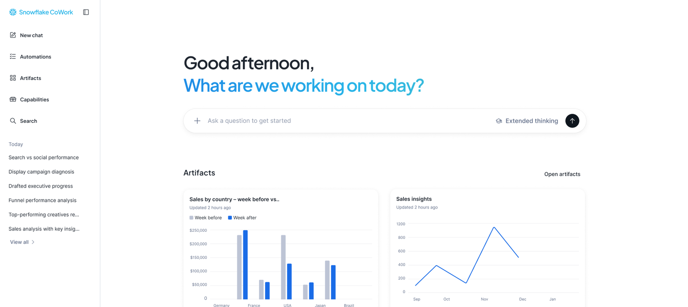
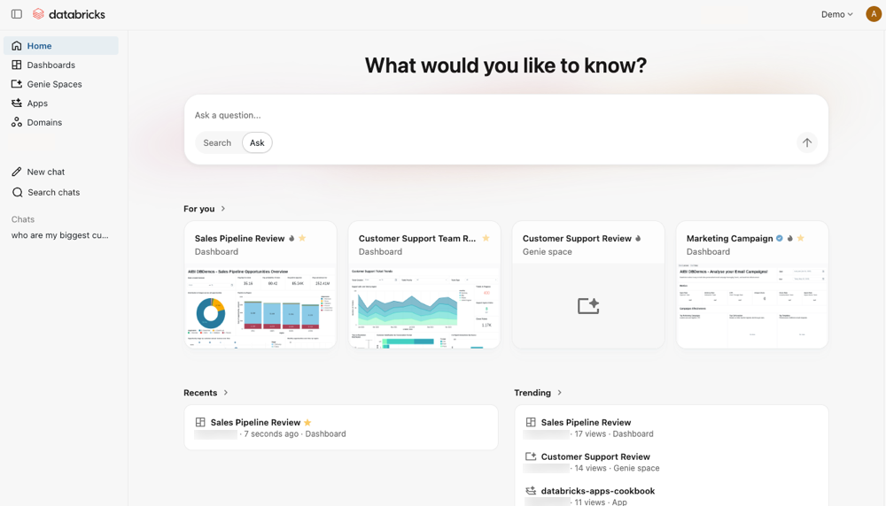
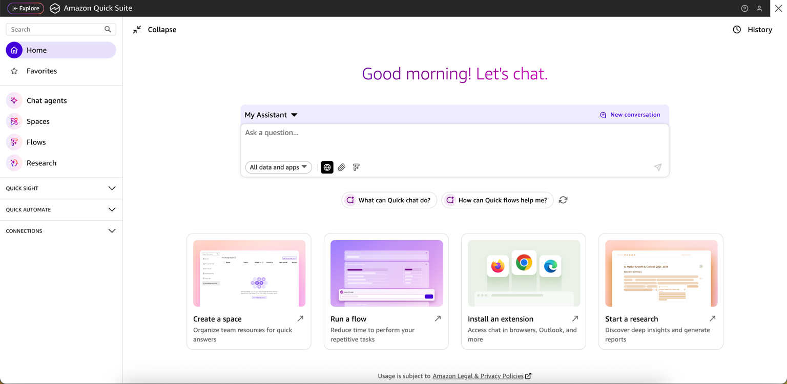
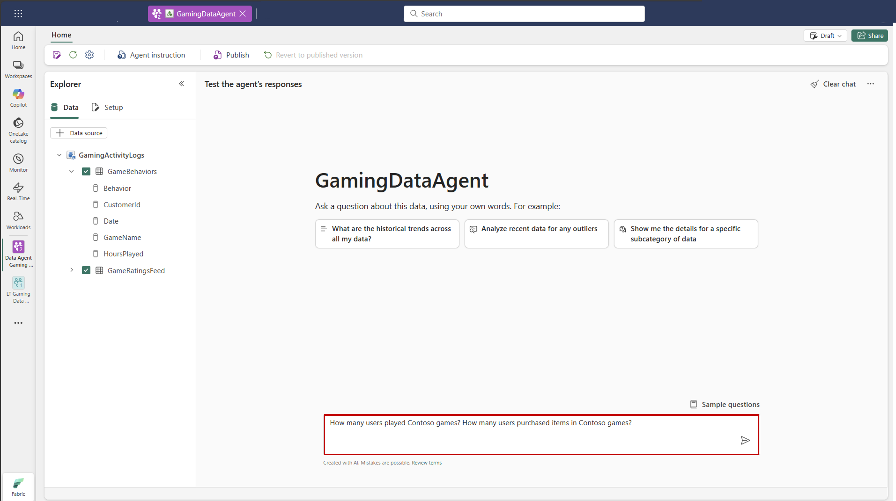
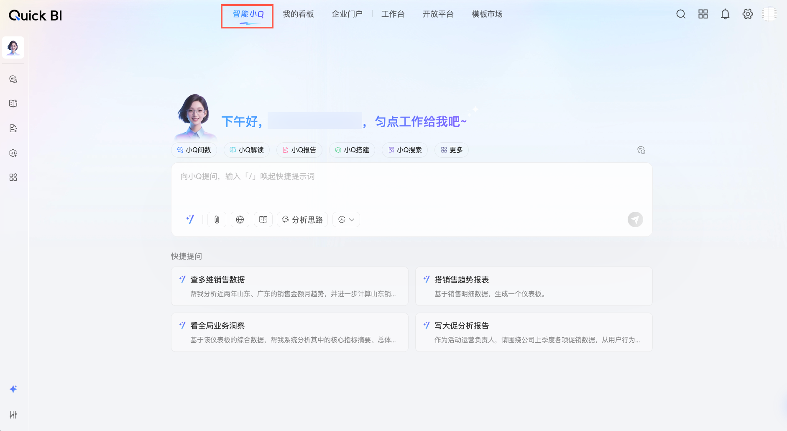
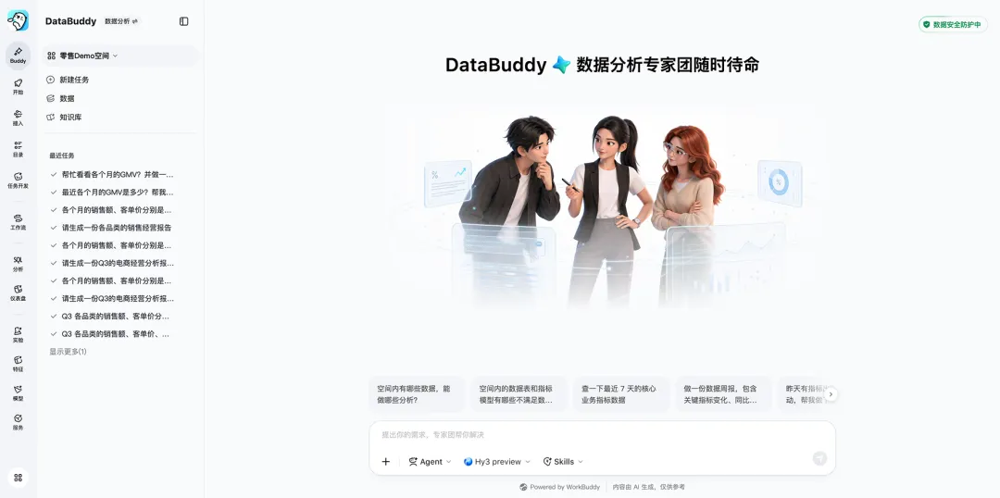
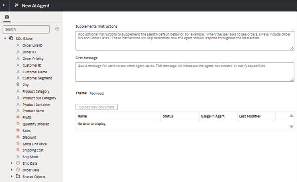
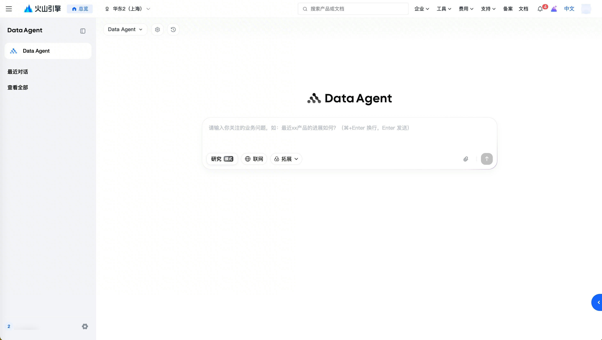
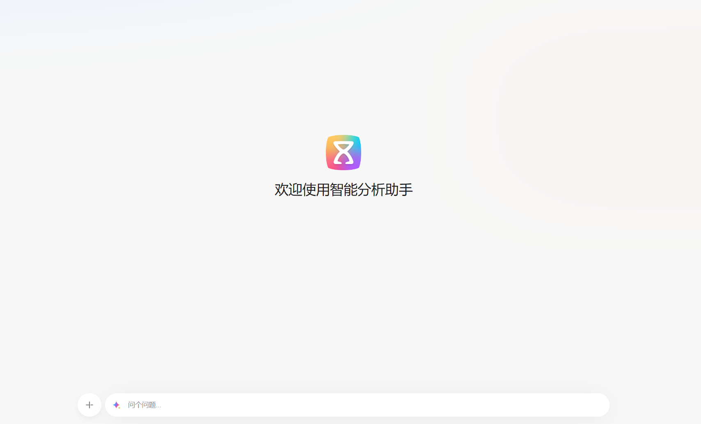
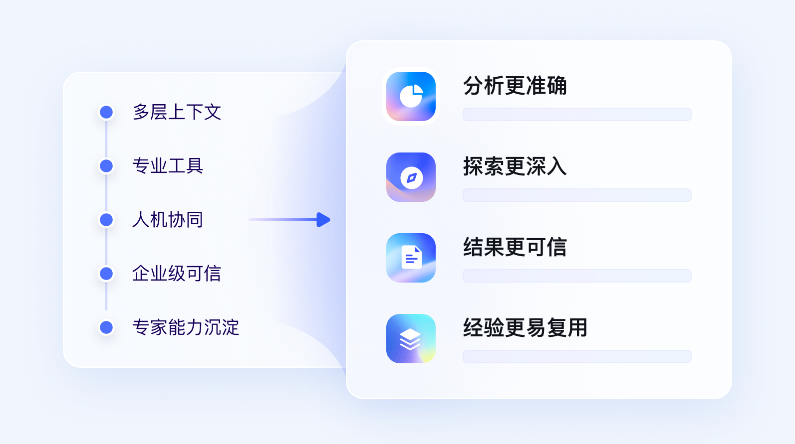

结构选择：主报告看结论，详册先横比再逐家钻取
没有拆成 11 个孤立子页面。统一能力全集、数据源口径和责任模型必须并排可见；向下滚动仍可在每家厂商章节查看大图、入口路径、治理判断和视频证据。
67去重能力项
12数据源与接入方式
11厂商统一标尺
本详册先用 67 项去重后的细粒度能力、12 类数据源与接入方式和统一任务流程比较 11 家厂商，再保留官方入口截图、首次任务路径与演示作为体验证据。截图能判断入口收敛度；能力矩阵才解释准确性、易用度和落地成本为何不同。所有状态均来自公开官方资料，不替代账号实测。
没有拆成 11 个孤立子页面。统一能力全集、数据源口径和责任模型必须并排可见；向下滚动仍可在每家厂商章节查看大图、入口路径、治理判断和视频证据。
真实 UI 只证明厂商公开过这个界面；不证明当前账号、区域、Edition 已可用。
官方动图/视频 可观察任务过程；仍不证明权限负例、规模和失败行为。
概念图 只证明方向，不能拿来与真实控制台等价比较。
入口“像聊天”不是强弱依据；关键是它能否承载跨域任务、继承最终用户权限，并产出可继续使用的受治理工件。
| 厂商 | 公开入口 | 入口形态 | 首次任务前置 | 截图直接显示的强项 | 不能从截图证明 |
|---|---|---|---|---|---|
| Snowflake91.3 ±3 | CoWork / ai.snowflake.com | 个人工作 Agent 首页 | 管理员开放数据、工具与身份 | 对话、自动化、工件、能力与历史同屏 | MCP 动作评测和身份默认值是否无残差 |
| Databricks90.6 ±3 | Genie One / /one | 数据消费统一首页 | UC 数据、Genie Space/资产已治理 | Ask/Search、Dashboard、Genie、Apps 统一发现 | 复杂业务动作、不同嵌入凭据是否一致 |
| Google Cloud85.9 ±4 | BigQuery Conversational Analytics | BigQuery 内 Conversations + Agent Catalog | 创建/发布 Agent，绑定数据源与 IAM | 多步推理、Agent 目录、结构化与非结构化数据 | BigQuery/Looker/数据库之间统一语义与策略 |
| AWS85.0 ±4 | Amazon Quick（图中名 Quick Suite） | Chat-primary 工作首页 | 管理员连接数据、Apps、Agents、Spaces | Chat、Research、Flow、Space 与连接器一屏收敛 | 新组合的长期成熟度与数据正确性回归深度 |
| Microsoft84.4 ±4 | Fabric Data Agent → M365 Copilot | Fabric 构建/测试面 + 办公分发面 | 工作区、数据源、发布、Agent Store | 数据源、字段、指令、测试与发布在同一作者界面 | 它还不是 Fabric 全产品的单一业务首页 |
| 阿里云81.8 ±5 | Quick BI 智能小Q + DataWorks Data Agent | 消费入口 + 对话式接入/治理入口 | 购买相应版本，准备数据集/数据源、网络和 Serverless 资源组 | 问数/报告 + 单表/整库同步、ChatDB、治理计划/Diff | Quick BI、DataWorks、DMS 是否同一 Session/OBO/Trace |
| 腾讯云79.6 ±7 | DataBuddy | Agent-native 数据工作台 | 试用/购买、工作空间与数据准备 | 任务历史、Skills、SQL/工程/治理/分析入口并列 | 2026-08 新产品的规模、SLA 与持续回归 |
| Oracle79.0 ±5 | OAC AI Agent / Workbook / standalone | 领域 Agent 配置面 + 分散消费入口 | 作者绑定数据集、指令与知识文档 | 领域数据、补充指令、首条消息、知识文档可配置 | OAC、Select AI、DB Tools 是否统一生命周期 |
| 火山引擎68.6 ±6 | Data Agent / 智能分析 Agent | 专用对话页 | 项目、数据集、Agent 配置 | 研究模式、联网、拓展、附件与报告生成 | 动作控制面、OBO 与版本化评测闭环 |
| 华为云67.6 ±6 | DataArts Insight 智能分析助手 | 项目内 BI 问答页 | 企业版 + 公测开通 + 数据源/数据集/助手 | 极简问答入口，产品内可生成分析与图表 | 与 AgentArts/数据库的身份、语义、Trace 贯通 |
| 百度智能云62.9 ±9 | DataBuilder Data Agent（方向） | 官网能力叙事 | 公开资料不足 | 强调上下文、专业工具、人机协同、可信结果 | 真实对话入口、API/MCP、OBO、评测与 GA 状态 |
以下内容由同一份数据驱动主报告摘要和本页完整矩阵；入口界面只是 67 项能力中的一小部分。
最像“个人工作 Agent”的统一入口；不只问数，还把工件、自动化、搜索和跨系统动作放进同一工作面。

公开入口是 ai.snowflake.com。CoWork（原 Snowflake Intelligence）定位为每位知识工作者的个人 Agent，并把 Deep Research、MCP 动作、可复用 Artifacts 与自动化放在同一首页。
最像“受治理数据消费首页”：Ask/Search、Dashboard、Genie Space、App 和 Domain 围绕同一数据平台汇聚。

获授权的业务用户可通过工作区内 Genie One 或直接 /one 进入。它不是替代专业工作区，而是给消费者一个简化入口，让用户搜索资产、自然语言提问、打开 Dashboard/Genie/App。
官方另提供 Lakeflow Connect 数据库/SaaS/文件/流接入、Unity Catalog 下的外部数据库联邦只读、Auto Loader Schema 演进，以及 Discover/Catalog Explorer、自动血缘、质量监控和敏感分类。它的强项是对象与治理底座连续；但公开材料没有证明这些专业配置都已由 Genie One 单一对话直接完成。
官方动图显示 Conversations 与 Agent Catalog 双面：用户可直接分析，也可发现、创建、发布领域数据 Agent。

入口位于 BigQuery 的 Conversational Analytics，顶层包含 Conversations 与 Agents/Agent Catalog。用户可以进入已有 Agent 对话，也可由数据团队创建并发布领域 Agent；API v1 已提供程序化消费路径。
官方文档直接把 Chat 定义为 primary interface；从问答、Research 到 Flow、Space 和外部动作都由它首跳。

用户从 Quick 首页聊天开始。系统可根据请求回答连接数据、生成内容、执行 Flow、开展 Research 或在外部应用中采取动作；Spaces 组织 Dashboard、Dataset、文档、知识库与连接器上下文。
作者在 Fabric 建 Agent，业务用户更可能在 Microsoft 365 Copilot/Agent Store 消费；入口优势来自办公分发，而非 Fabric 首页收敛。

数据团队在 Fabric 工作区创建 Agent、绑定数据源、配置指令、测试并发布；业务用户可在 Fabric 中使用，也可经 Agent Store / Microsoft 365 Copilot 分发。两层入口是 Microsoft 的真实设计，不应误读为一个 Fabric 聊天首页。
业务消费面有智能小Q；数据建设面已出现对话式接入、ChatDB 与治理 Agent，覆盖范围明显不再局限于问数。

业务消费从 Quick BI 顶部“智能小Q”进入；数据建设则从 DataWorks AI Native / Data Agent 进入。最新官方 DI Agent 文档明确把单表/整库、离线/实时同步做成自然语言任务，并提供 ChatDB 与多模态 ETL；治理 Agent 位于 DataWorks 治理场景。公开资料仍未证明这些入口共享同一 Session、OBO 与 Trace。
DI Agent 官方说明可自动探测 Schema、字段映射、资源和调度，展示表清单与配置摘要后发布；还可画像已接数据源、预览样例、建库建表和修改结构。Data Governance Agent 可扫描、生成治理方案与 SQL Diff，用户确认后修复并复检。能力很激进，但写操作必须额外验证最小权限、影响分析、幂等和权威后验。
方向最激进的国内新入口：不是给旧数据平台加一个问数框，而是把工程、治理、分析都声明为“对话即交付”。

用户进入 DataBuddy 工作空间，从首页直接描述任务；侧栏把数据、知识库、任务开发、工作流、SQL 分析、仪表盘、治理、模型与服务放在同一壳层，输入框可选择 Agent、模型与 Skills。
入口并不最统一，但它在“外部 Agent 如何以最终用户身份安全进入数据库”这个子问题上是关键标杆。

作者在 OAC 中为 Agent 绑定数据集、补充指令、首条消息与知识文档，再把 Agent 加到 Workbook；消费者在 Workbook Insights/Assistant 中使用，也可独立使用。Select AI、Database Tools MCP 与 OAC 仍是多个入口面。
专注数据分析与深度研究：入口已很像通用 Agent，但产品强项仍集中在分析、报告和嵌入。

购买服务并进入数据智能体后，用户选择/创建项目，进入 Data Agent 对话页。通用 Agent 可切换研究、联网、拓展与文件输入；配置后的智能分析 Agent 可做问数、归因、深度研究并生成网页/文档报告。
真实问答入口已经存在；差距不在“有没有聊天框”，而在它能否成为 DataArts、AgentArts 与数据库共同的统一任务壳层。

用户先购买 DataArts Insight 企业版并申请智能分析助手公测开通，再创建项目、连接数据源、建数据集、创建并同步助手，最后从“数据分析 → 智能分析助手 → 问答”进入。它目前是项目内 BI 旅程，不是跨产品统一首页。
官网方向与目标高度吻合，但公开材料尚不足以判断真实入口、治理深度和生产成熟度。

Unknown。公开官网强调 Data Agent 的多层上下文、专业工具、人机协同、企业级可信和经验复用，但截至基准日未找到能复核真实对话首页、首次任务路径、Agent API/MCP、最终用户委托与评测运营的当前官方材料。
你的主方向判断成立，但需要从“入口统一”进一步收紧为“受治理的任务闭环统一”：对话页会成为主意图入口，API/CLI/MCP 会成为 Agent 能力面；真正决定厂商强弱的是数据如何接入、业务语义和可信逻辑由谁准备、最终用户权限是否实施到底、复杂任务能否形成可核验结果，以及失败案例能否进入版本化回归。Snowflake/Databricks 的优势是准备工作可沉淀为可复用的质量保障对象；AWS/Google 的优势是缩短用户抵达数据和任务的路径；华为当前最需要补的不是第二个聊天框，而是降低指标预计算、宽表准备等客户负担，并贯通 DataArts、AgentArts 与数据库的共享身份、语义、策略和执行链路。
回到 67 项能力全集 · 查看 12 类数据源 · 返回主报告看能力摘要 · 阅读文字版方法 · 复核证据账本